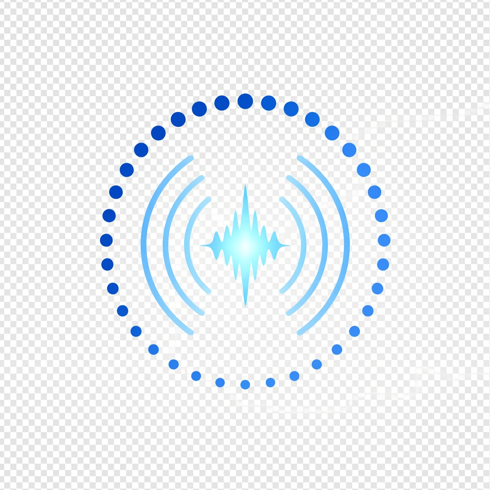
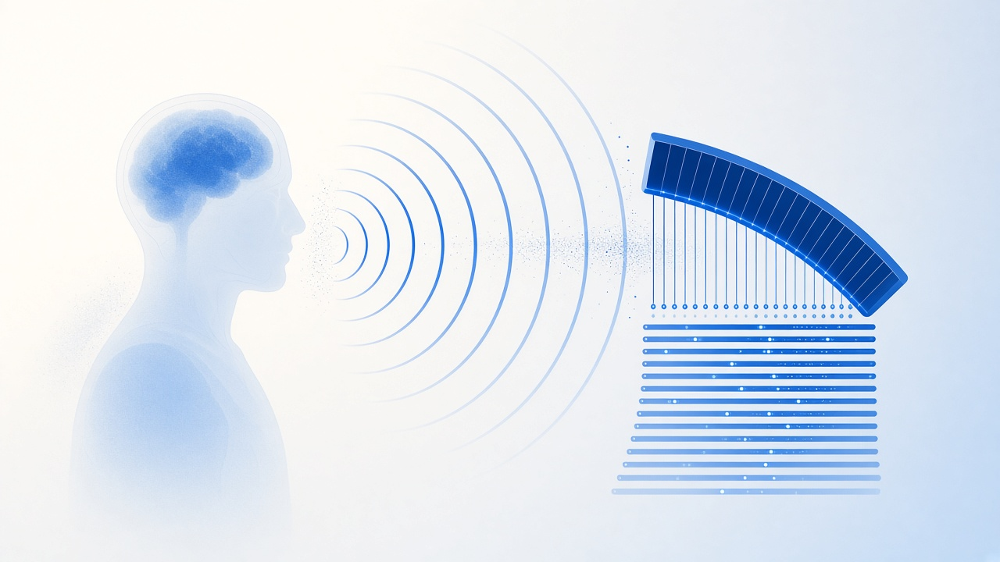
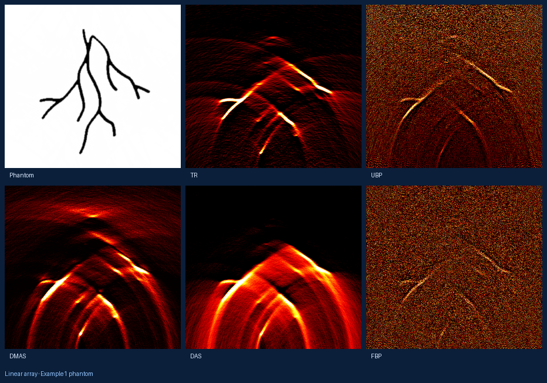
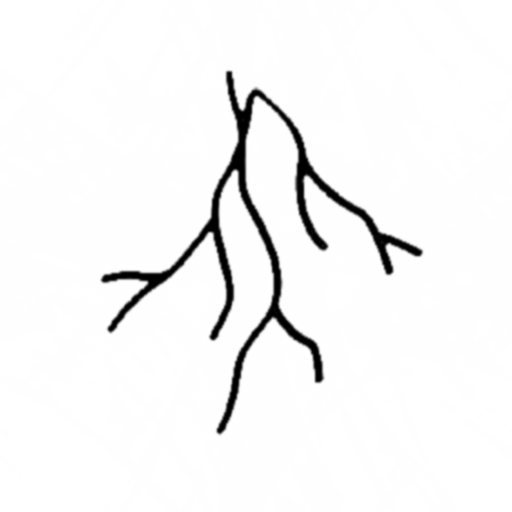
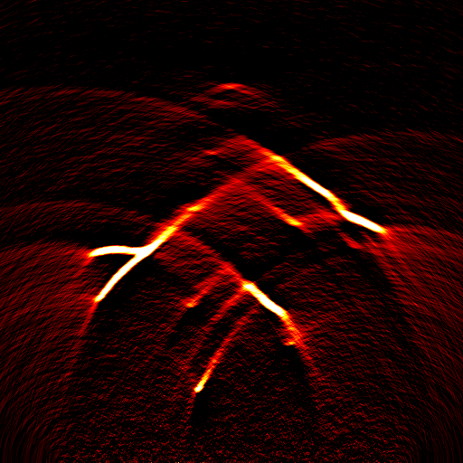
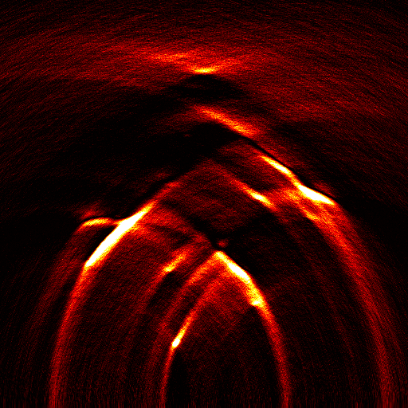
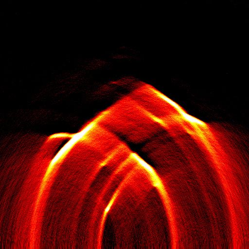
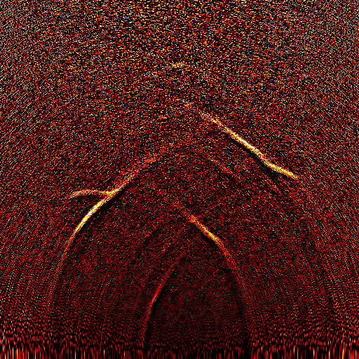
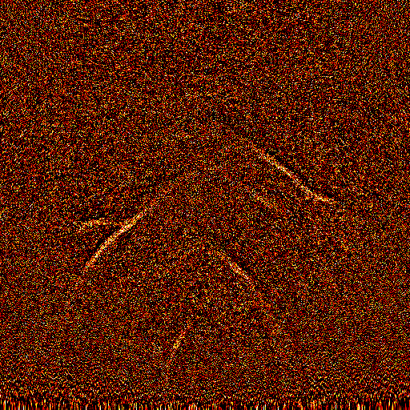

Physics-aware simulation
Linear, square, circular, and arc arrays with finite-element sensors, heterogeneous media, attenuation, and calibrated acquisition noise.
PATBox is a thin, physics-aware API over k-Wave forward simulation and a suite of
delay-and-sum family reconstruction methods. Tune sensors, media, noise, and algorithms
from params.yaml — then evaluate image quality in one call.


From initial pressure → wave propagation → array sensing → RF channels.

Linear, square, circular, and arc arrays with finite-element sensors, heterogeneous media, attenuation, and calibrated acquisition noise.
DAS, DMAS, coherence and MV variants, FBP/UBP hybrids, time reversal, and iterative solvers behind one dispatcher.
Defaults live in params.yaml. Override any field at runtime with name-value pairs.
PATBox targets researchers who need a reproducible 2-D photoacoustic pipeline: generate sensor data from an initial-pressure image, reconstruct with multiple algorithms under identical conditions, and score results with standard image-quality metrics.
TargetSNRdBLinear-array reconstructions of the Example1 vessel phantom — see the Reconstruction page for the full set.

Same acquisition, different algorithms (linear array).






install_patbox('/path/to/k-Wave')
[p0, sim, info, metrics] = patReconImage('data/Example1.bmp', ...
'SensorType', 'linear', ...
'TargetSNRdB', 20, ...
'Algorithm', 'DMAS');
fprintf('%s | PSNR %.2f dB | SSIM %.3f\n', ...
info.algorithm, metrics.psnr, metrics.ssim);Architecture · Simulation · Modules · Reconstruction · API · Configuration · FAQ
Dependency. Forward simulation requires k-Wave. Documentation structure follows the same Getting Started → modules → API pattern used by packages such as k-Wave and j-Wave, adapted for a MATLAB reconstruction toolbox.